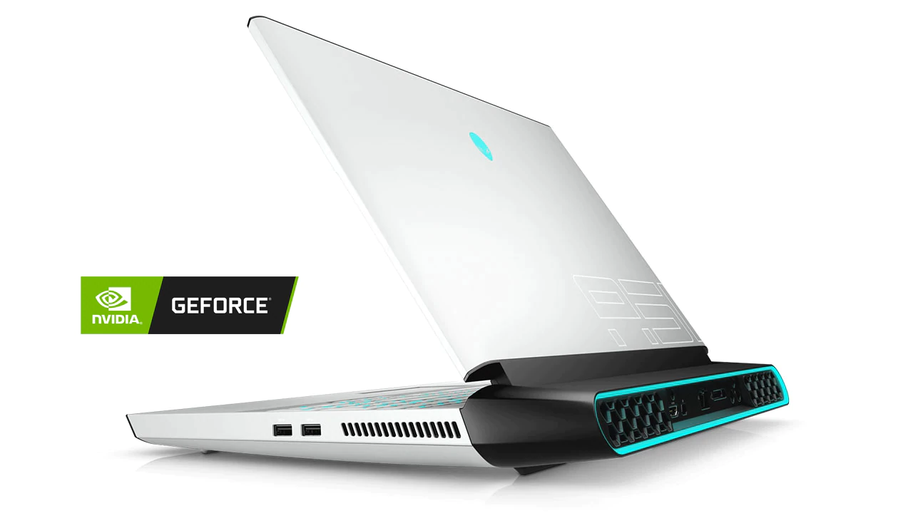

La laptop más potente.

Revolucionaria laptop para juegos de 17" con la 9.ª generación de procesadores Intel® Core™ para computadora actualizables y sobreacelerables, y gráficos NVIDIA® GeForce RTX™,
además de un chasis de aleación de magnesio.
Especificaciones
9th Generation Intel® Core™ i7-9700K
NVIDIA® GeForce RTX™ 2060 6GB GDDR6
17.3" FHD (1920 x 1080) 144Hz
16GB, 2x8GB, DDR4, 2400MHz
Area-51m de Alienware eleva los estándares para la ingeniería innovadora con su diseño que representa un punto de inflexión. La nueva identificación visual
se inspiró en nuestros diseños industriales antiguos, lo que representa un regreso a las bases, mientras que incorpora lecciones de nuestras raíces originales.
El nuevo diseño futurista de Area-51m refleja la diversa y cambiante naturaleza de los jugadores en todas partes, incorporando un alto contraste,
ingeniería enfocada en el rendimiento con estructura combinada, secciones angulares, iluminación audaz y control térmico celebrado.